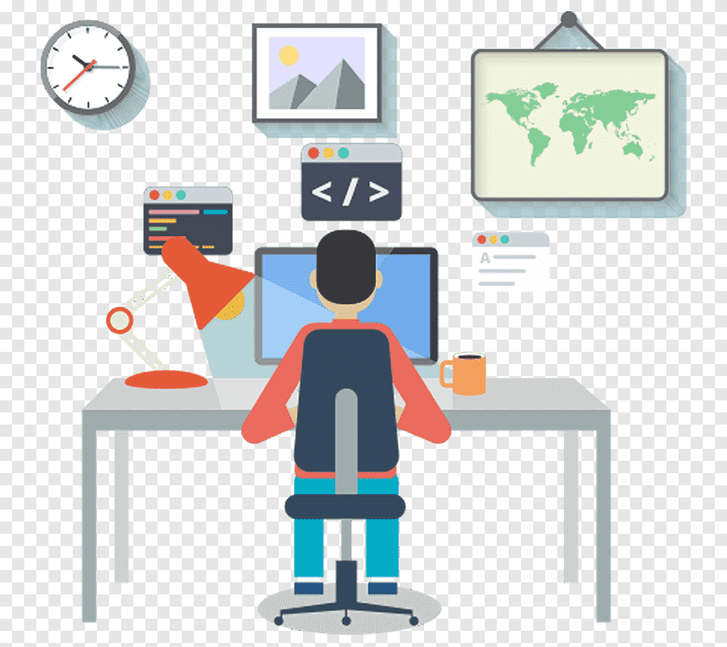

Hi, My Name is Ankit
and I am a Passionate
Java Developer

Work Experience

Application Support Engineer(dec2022-april2023)
1)Diagnosed and resolved hardware, software, and
networking issues while managing ticketing systems to track and resolve customer queries
efficiently. Performed system updates, security patches, and performance monitoring to ensure
stability and security.
2)Worked closely with cross-functional teams to troubleshoot
complex issues, demonstrating strong communication, adaptability, and teamwork to enhance
customer satisfaction and streamline operations.
3)Applied Core Java, J2EE, Spring Boot, Hibernate, and MySQL
to troubleshoot backend applications, optimize database performance, and ensure smooth
functionality across systems.

Java Developer Intern(jan2023-august2023)
• Having 6 months of experience in Core Java.
• Proficiency Exception handling
• Strong expertise in Advanced Java with JDBC.
• Knowing Spring IOC.
• Familiar with Spring MVC.
• Strong experience in API Postman.
• Solid work experience in MySQL.
• Software develops on web projects using Spring boot.
• Understanding Hibernate Mapping.
• Worked on Java Backend Development.
• Excellent problem-solving skills along with good communication.
Technical Support Engineer(March 2024-present)
1) Optimised application process flow to improve performance.
2)Liaised with clients to clarify business challenges and objectives to optimize performance of
existing systems.
3)Delivered technical support to clients by offering solutions based on specific problems and
concerns.
4)Performed troubleshooting and resolution for company-wide technical issues.